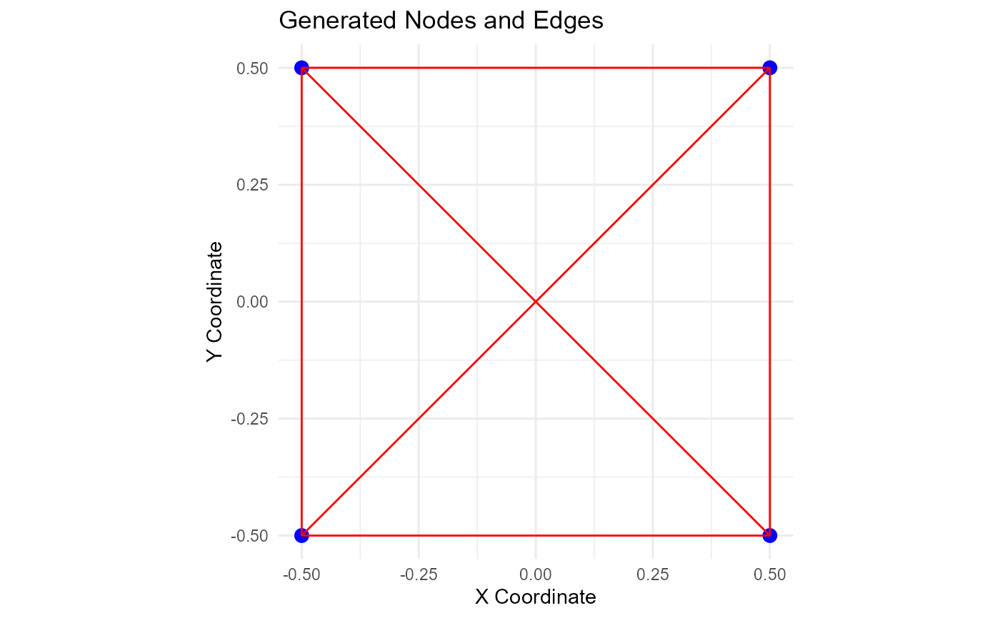
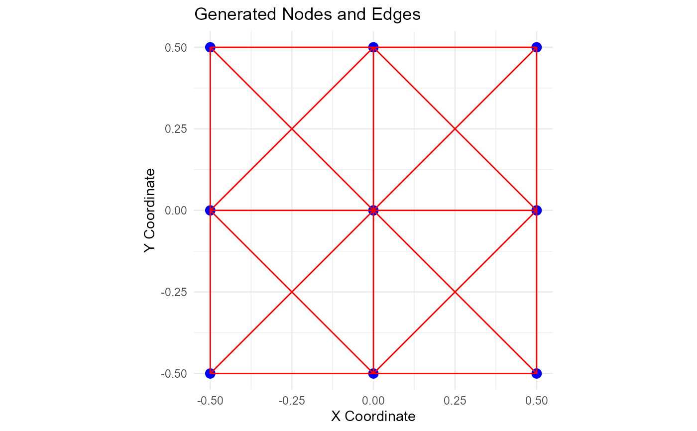

This function creates a square mesh by sampling nodes uniformly on a square and then connecting these nodes with edges. The nodes are distributed based on the provided side length and number of segments. Horizontal, vertical, and diagonal edges are generated to fully connect the mesh. The function returns a list containing the nodes and edges, along with data frames and a ggplot object for visualization.
Value
A list containing:
- nodes
A matrix with coordinates of the nodes.
- edges
A list of edges connecting the nodes.
- nodes_df
A data frame of nodes for ggplot.
- edges_df
A data frame of edges for ggplot.
- plot
A ggplot object visualizing the nodes and edges.
Additionally, the list contains attributes:
- side_length
The side length used to generate the mesh.
- n_seg
The number of segments used to generate the mesh.
- nodes_df_dim
Dimensions of the nodes data frame.
- edges_df_dim
Dimensions of the edges data frame.
Details
This function generates a mesh of nodes and edges based on the provided side length and number of segments.
This function creates a square mesh of nodes and edges, where the nodes are sampled uniformly on a square. The edges are generated to connect the nodes horizontally, vertically, and diagonally.
See also
Other Data Generation:
get_juiced_data()
Examples
generate_mesh_data(1, 1)
#> $nodes
#> [,1] [,2]
#> [1,] -0.5 -0.5
#> [2,] -0.5 0.5
#> [3,] 0.5 -0.5
#> [4,] 0.5 0.5
#>
#> $edges
#> $edges[[1]]
#> [1] 1 3
#>
#> $edges[[2]]
#> [1] 2 4
#>
#> $edges[[3]]
#> [1] 1 2
#>
#> $edges[[4]]
#> [1] 3 4
#>
#> $edges[[5]]
#> [1] 1 4
#>
#> $edges[[6]]
#> [1] 3 2
#>
#>
#> $nodes_df
#> x y
#> 1 -0.5 -0.5
#> 2 -0.5 0.5
#> 3 0.5 -0.5
#> 4 0.5 0.5
#>
#> $edges_df
#> x y xend yend
#> 1 -0.5 -0.5 0.5 -0.5
#> 2 -0.5 0.5 0.5 0.5
#> 3 -0.5 -0.5 -0.5 0.5
#> 4 0.5 -0.5 0.5 0.5
#> 5 -0.5 -0.5 0.5 0.5
#> 6 0.5 -0.5 -0.5 0.5
#>
#> $plot

#>
#> attr(,"side_length")
#> [1] 1
#> attr(,"n_seg")
#> [1] 1
#> attr(,"nodes_df_dim")
#> [1] 4 2
#> attr(,"edges_df_dim")
#> [1] 6 4
generate_mesh_data(1, 2)
#> $nodes
#> [,1] [,2]
#> [1,] -0.5 -0.5
#> [2,] -0.5 0.0
#> [3,] -0.5 0.5
#> [4,] 0.0 -0.5
#> [5,] 0.0 0.0
#> [6,] 0.0 0.5
#> [7,] 0.5 -0.5
#> [8,] 0.5 0.0
#> [9,] 0.5 0.5
#>
#> $edges
#> $edges[[1]]
#> [1] 1 4
#>
#> $edges[[2]]
#> [1] 2 5
#>
#> $edges[[3]]
#> [1] 3 6
#>
#> $edges[[4]]
#> [1] 4 7
#>
#> $edges[[5]]
#> [1] 5 8
#>
#> $edges[[6]]
#> [1] 6 9
#>
#> $edges[[7]]
#> [1] 1 2
#>
#> $edges[[8]]
#> [1] 2 3
#>
#> $edges[[9]]
#> [1] 4 5
#>
#> $edges[[10]]
#> [1] 5 6
#>
#> $edges[[11]]
#> [1] 7 8
#>
#> $edges[[12]]
#> [1] 8 9
#>
#> $edges[[13]]
#> [1] 1 5
#>
#> $edges[[14]]
#> [1] 4 2
#>
#> $edges[[15]]
#> [1] 2 6
#>
#> $edges[[16]]
#> [1] 5 3
#>
#> $edges[[17]]
#> [1] 4 8
#>
#> $edges[[18]]
#> [1] 7 5
#>
#> $edges[[19]]
#> [1] 5 9
#>
#> $edges[[20]]
#> [1] 8 6
#>
#>
#> $nodes_df
#> x y
#> 1 -0.5 -0.5
#> 2 -0.5 0.0
#> 3 -0.5 0.5
#> 4 0.0 -0.5
#> 5 0.0 0.0
#> 6 0.0 0.5
#> 7 0.5 -0.5
#> 8 0.5 0.0
#> 9 0.5 0.5
#>
#> $edges_df
#> x y xend yend
#> 1 -0.5 -0.5 0.0 -0.5
#> 2 -0.5 0.0 0.0 0.0
#> 3 -0.5 0.5 0.0 0.5
#> 4 0.0 -0.5 0.5 -0.5
#> 5 0.0 0.0 0.5 0.0
#> 6 0.0 0.5 0.5 0.5
#> 7 -0.5 -0.5 -0.5 0.0
#> 8 -0.5 0.0 -0.5 0.5
#> 9 0.0 -0.5 0.0 0.0
#> 10 0.0 0.0 0.0 0.5
#> 11 0.5 -0.5 0.5 0.0
#> 12 0.5 0.0 0.5 0.5
#> 13 -0.5 -0.5 0.0 0.0
#> 14 0.0 -0.5 -0.5 0.0
#> 15 -0.5 0.0 0.0 0.5
#> 16 0.0 0.0 -0.5 0.5
#> 17 0.0 -0.5 0.5 0.0
#> 18 0.5 -0.5 0.0 0.0
#> 19 0.0 0.0 0.5 0.5
#> 20 0.5 0.0 0.0 0.5
#>
#> $plot

#>
#> attr(,"side_length")
#> [1] 1
#> attr(,"n_seg")
#> [1] 2
#> attr(,"nodes_df_dim")
#> [1] 9 2
#> attr(,"edges_df_dim")
#> [1] 20 4